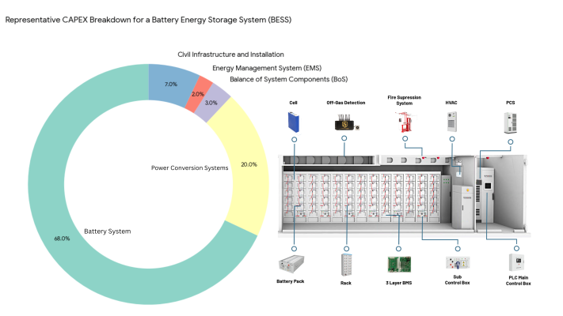
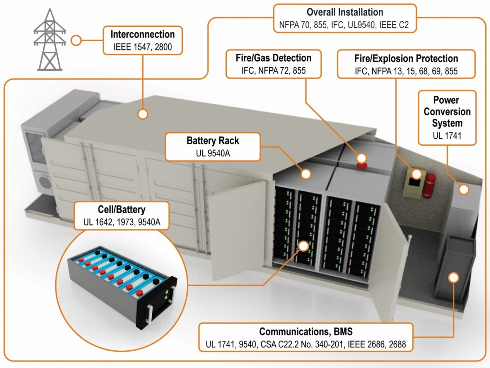
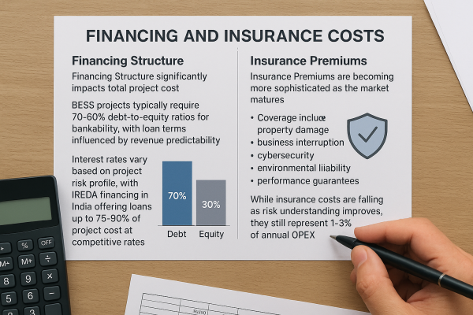
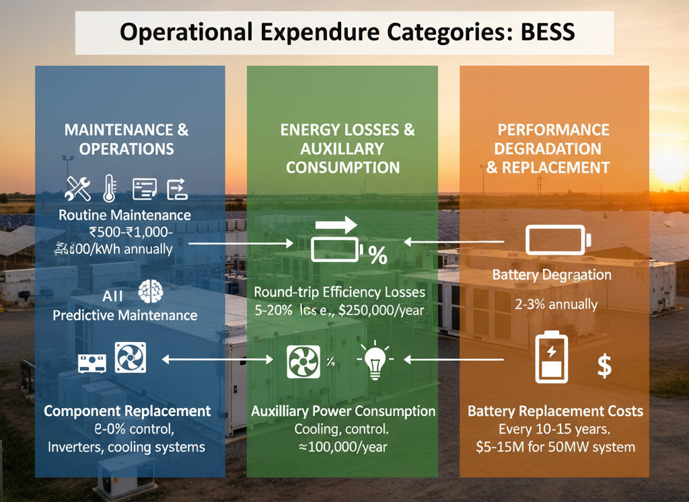
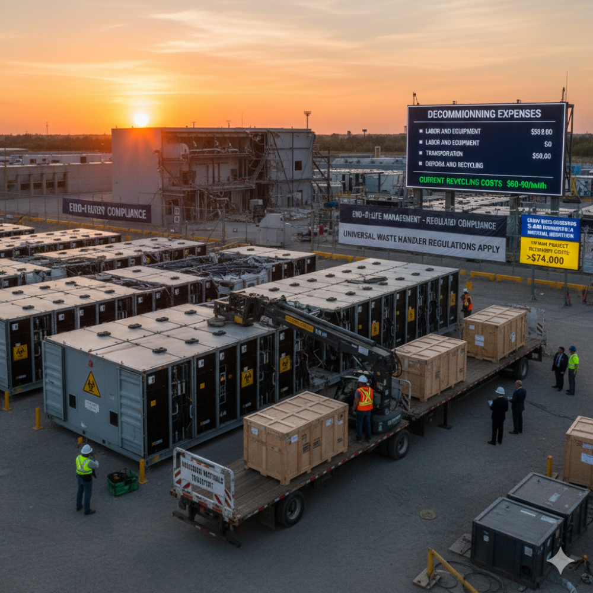
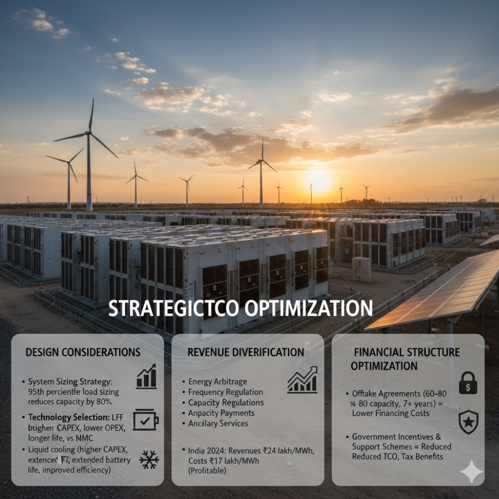

The Battery Energy Storage System (BESS) market has witnessed remarkable cost reductions over the past decade, with system costs dropping approximately 80% since 2015. However, focusing solely on battery prices provides an incomplete picture of the true investment required. The Total Cost of Ownership (TCO) encompasses a comprehensive range of expenses that extend far beyond the initial battery acquisition, fundamentally shaping the economic viability of BESS projects.
Understanding True TCO Components
Capital Expenditure Breakdown
While batteries represent the largest single cost component, they account for only 46-69% of total CAPEX. A detailed analysis reveals the complete capital structure:
- Battery System (DC Side): 64-69% of total CAPEX includes lithium-ion battery packs, cooling units, fire protection systems, containers, racks, DC combiner boxes, and accessories. Current battery costs range from ₹15,000-₹20,000 per kWh for lithium-ion technology, though prices vary significantly by chemistry and scale.
- Power Conversion Systems: 20-28% of CAPEX encompass inverters, transformers, and power cables. These systems cost approximately $50-$150 per kW, with the exact percentage depending on energy storage duration and voltage requirements.
- Balance of System Components: 20-30% of total system cost include battery management systems (BMS), thermal management, electrical wiring, protection equipment, and structural supports. BMS alone costs ₹1,500-₹2,000 per kWh.
- Energy Management System (EMS): Up to 2% of CAPEX covers control software, communication infrastructure, and monitoring systems essential for optimized operations.
- Civil Infrastructure and Installation: 6-9% of CAPEX includes site preparation, structural foundations, electrical infrastructure, and installation labor.

Grid Connection and Permitting Costs
Grid connection expenses represent a significant but often underestimated component. Construction cost subsidies in markets like Germany can be substantial, with fees calculated based on capacity requirements. These costs vary dramatically by location and grid infrastructure requirements.
Permitting and regulatory compliance add another layer of expense, with costs varying by jurisdiction. Projects require building permits, environmental assessments, and compliance with safety standards like UL 9540A and IEC 62933.

Financing and Insurance Costs
Financing Structure significantly impacts total project cost. BESS projects typically require 70-80% debt-to-equity ratios for bankability, with loan terms influenced by revenue predictability. Interest rates vary based on project risk profile, with IREDA financing in India offering loans up to 75-80% of project cost at competitive rates.
Insurance Premiums are becoming more sophisticated as the market matures. Coverage includes property damage, business interruption, cybersecurity, environmental liability, and performance guarantees. While insurance costs are falling as risk understanding improves, they still represent 1-3% of annual OPEX.

Operational Expenditure Categories
Maintenance and Operations
Annual Operations & Maintenance costs range from 2-5% of initial system cost. This includes:
- Routine Maintenance: Regular monitoring, temperature management, software updates, and performance diagnostics. Costs typically range ₹500-₹1,000 per kWh annually.
- Predictive Maintenance: Advanced diagnostics using AI-based systems for early fault detection, reducing unexpected downtime and extending system life.
- Component Replacement: Inverters, cooling systems, and other balance-of-system components require periodic replacement throughout the system's 15–20-year lifespan.
Energy Losses and Auxiliary Consumption
- Round-trip Efficiency Losses typically range from 5-20%, depending on technology and operating conditions. For a 50MW/50MWh system, assuming 10% losses and electricity costs of $0.10 per kWh, annual energy loss costs could reach $250,000.
- Auxiliary Power Consumption for cooling, control systems, and safety equipment adds approximately $100,000 annually for utility-scale installations.
Performance Degradation and Replacement
Battery degradation represents one of the most significant long-term costs. Lithium-ion batteries typically degrade 2-3% annually, requiring capacity oversizing and eventual replacement.
Battery Replacement Costs occur every 10-15 years and can range from $5-15 million for a 50MW system. Smart sizing strategies account for degradation throughout the project lifecycle, with some studies suggesting 37.33€/kWh replacement costs.

End-of-Life and Decommissioning
Decommissioning Expenses
End-of-life management is increasingly regulated and costly. Decommissioning typically requires 5.9% of original CAPEX, covering:
- Labor and Equipment: Dismantling, packaging, and removal operations requiring specialized personnel and tools.
- Transportation: Moving batteries to recycling facilities, with costs varying by distance and battery weight.
- Disposal and Recycling: Current recycling costs range $60-90 per kWh, though regulations are tightening requirements for responsible disposal.
A 120 MW BESS decommissioning example showed costs of $1.4 million for demolition plus $4.6 million for material disposition, highlighting the scale of end-of-life expenses.
Regulatory Compliance
Environmental Regulations treat lithium-ion batteries as hazardous waste, requiring compliance with Universal Waste Handler regulations. Recovery costs for a 10 MWh project can exceed $474,000, including removal, packaging, transport, and recycling.

LCOS: The Complete Picture
Levelized Cost of Storage Calculation
The Levelized Cost of Storage (LCOS) provides the most comprehensive TCO metric, calculating the average cost per kWh of energy discharged over the system's lifetime. Current LCOS ranges ₹0.2-0.4 per kWh for advanced systems.
LCOS methodology includes:
- Initial CAPEX and financing costs
- Annual OPEX throughout system life
- Replacement costs for batteries and major components
- End-of-life disposal expenses
- Energy charging costs and efficiency losses
Geographic and Scale Variations
TCO varies significantly by geography and scale. Chinese systems average $101/kWh compared to $236/kWh in the US and $275/kWh in Europe, reflecting manufacturing scale, labor costs, and regulatory differences.
Utility-scale systems benefit from economies of scale, with costs declining from $300-600/kWh for smaller installations to $200-400/kWh for large projects.
Strategic TCO Optimization
Design Considerations
System Sizing Strategy dramatically impacts TCO. Sizing for 95th percentile load events rather than peak requirements can reduce required capacity by 80%, though backup solutions are needed for extreme events.
Technology Selection influences both CAPEX and OPEX. While LFP batteries cost more upfront, their longer cycle life and improved safety reduce long-term TCO compared to NMC alternatives.
Thermal Management Design affects both performance and maintenance costs. Liquid cooling systems require higher CAPEX but extend battery life and improve efficiency in high-duty applications.
Revenue Diversification
Modern BESS projects optimize TCO through multiple revenue streams: energy arbitrage, frequency regulation, capacity payments, and ancillary services. Merchant BESS operations in India became profitable in 2024 as revenues reached ₹24 lakh/MWh compared to costs of ₹17 lakh/MWh.
Financial Structure Optimization
Offtake agreements covering 60-80% of capacity for 7+ years enable higher leverage and lower financing costs. Government incentives and support schemes can significantly reduce effective TCO through reduced financing costs and tax benefits.

Future TCO Trends
The TCO landscape continues evolving rapidly. Battery costs are projected to decline 50% by 2025, while system integration becomes more sophisticated. Second-life battery systems offer lower CAPEX but higher LCOS due to reduced performance and increased maintenance requirements.
Regulatory frameworks are standardizing, potentially reducing permitting costs while increasing safety and environmental compliance expenses. Insurance costs are declining as risk understanding improves, partially offsetting other cost pressures.
Conclusion
True BESS TCO extends far beyond battery acquisition costs, encompassing complex interactions between technology, financing, operations, and end-of-life management. While battery costs have declined dramatically, successful BESS investments require comprehensive evaluation of all TCO components throughout the 15–20-year system lifecycle.
Modern BESS projects achieving 17% IRRs demonstrate that well-structured projects can generate attractive returns when all TCO elements are properly managed. As the market matures, understanding and optimizing total cost of ownership becomes the key differentiator between successful and failed BESS investments.